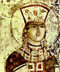

главная  персоналии
персоналии  Тамара
Тамара
главная |

Личность в историикраткая энциклопедияПроект «Личность в истории» посвящен людям — современникам грандиозных исторических событий, носителям редких качеств или людям, взгляды которых опередили их время. |
|||||
Коротко |
Статьи |
Персоналии |
Литература |
||
Тамара |
|||||
|
«…Лев, служа Тамар-царице, держит меч ее и щит». (Ш. Руставели). |
 Царица Тамара. Фреска из монастыря Вардзиа. XII век. Фрагмент. |
||||
Биографическая справкаТамара или Тамар (Ок. сер. 60–х гг. XII в. — 1213 г., иногда в качестве даты смерти указывается 1207.), царица Грузии (1184–1213). В царствование Тамары Грузия добилась больших военно-политических успехов. На период ее правления приходится рацвет грузинской культуры, ведется активное строительство. Царице Тамаре посвящена поэма Ш. Руставели «Витязь в тигровой шкуре» Цитаты«В царствование Тамары (1184—1213) были освобождены города Ани, Карс, Двин и весь север Армении, после чего там образовались вассальные владения армянских князей Захаридов, получивших название по имени одного из них, Захарии, выдающегося полководца, который находился на службе у грузинского царя и занимал высокий пост главнокомандующего Грузинского царства.». (ВСЕМИРНАЯ ИСТОРИЯ В ДЕСЯТИ ТОМАХ., «При царице Тамаре её министр финансов, по имени Кутлу Арслан, опиравшийся на купечество, добивался учреждения сословно-представительной палаты с законодательной властью, но эта попытка горожан была подавлена феодалами..» (ВСЕМИРНАЯ ИСТОРИЯ В ДЕСЯТИ ТОМАХ., «На укрепление политических связей Грузии с Русью указывает тот факт, что царица Тамара в первом браке была женою Георгия (Юрия), сына русского великого князя Андрея Боголюбского.». (ВСЕМИРНАЯ ИСТОРИЯ В ДЕСЯТИ ТОМАХ., Список литературы
|
|||||
|